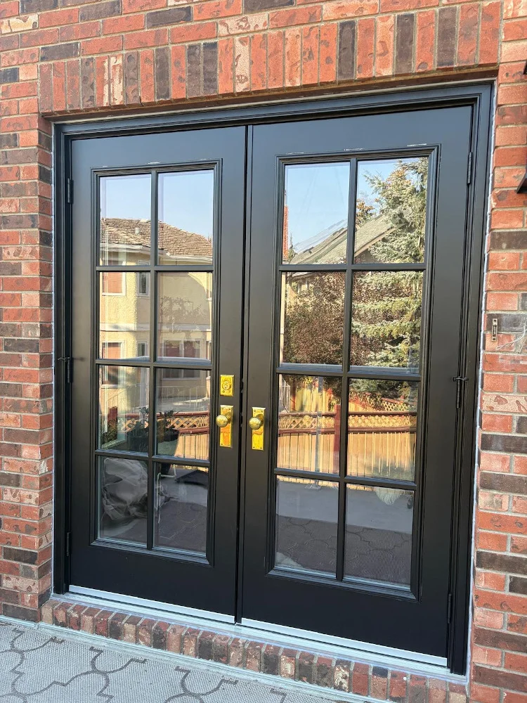
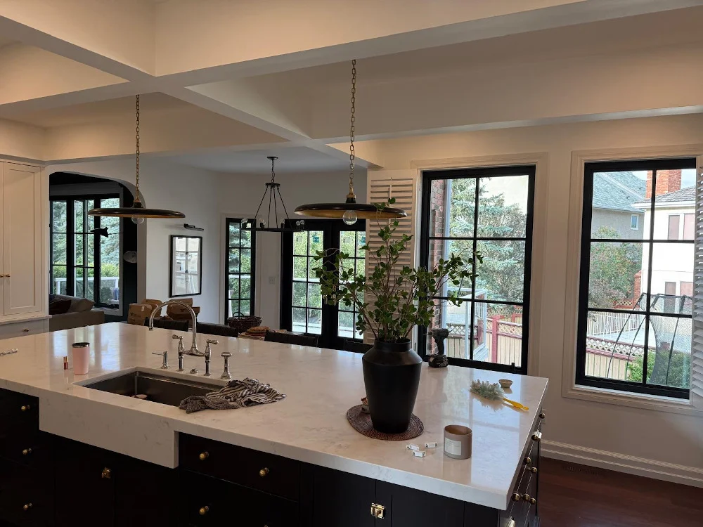
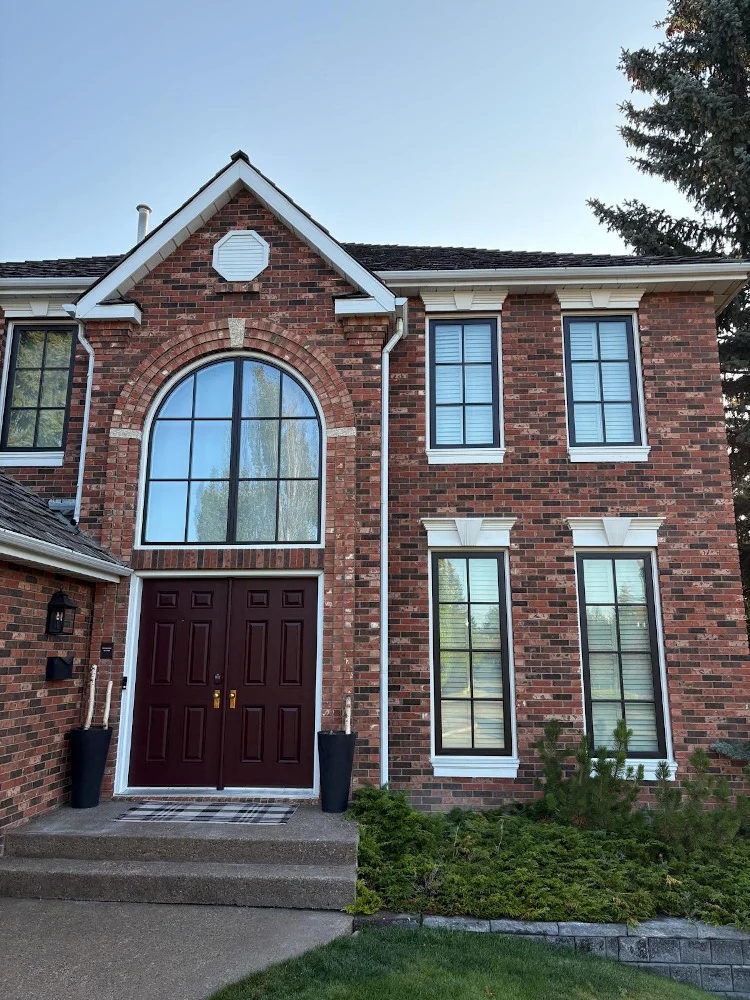
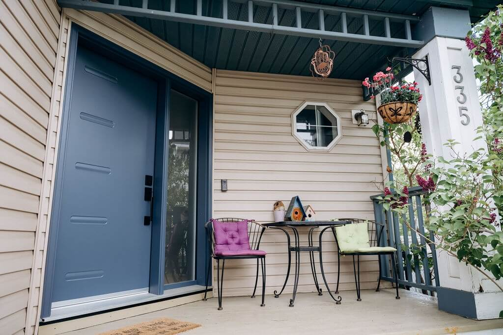
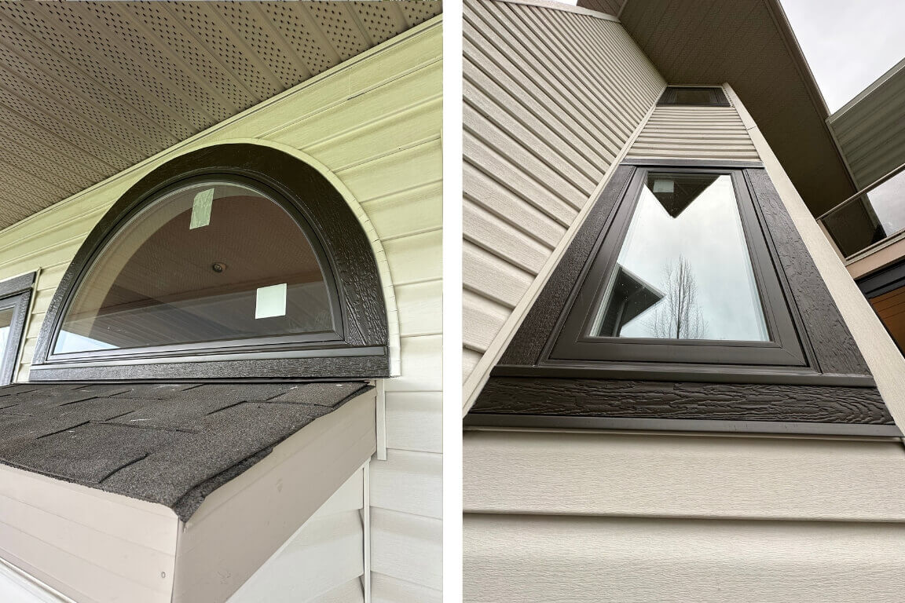
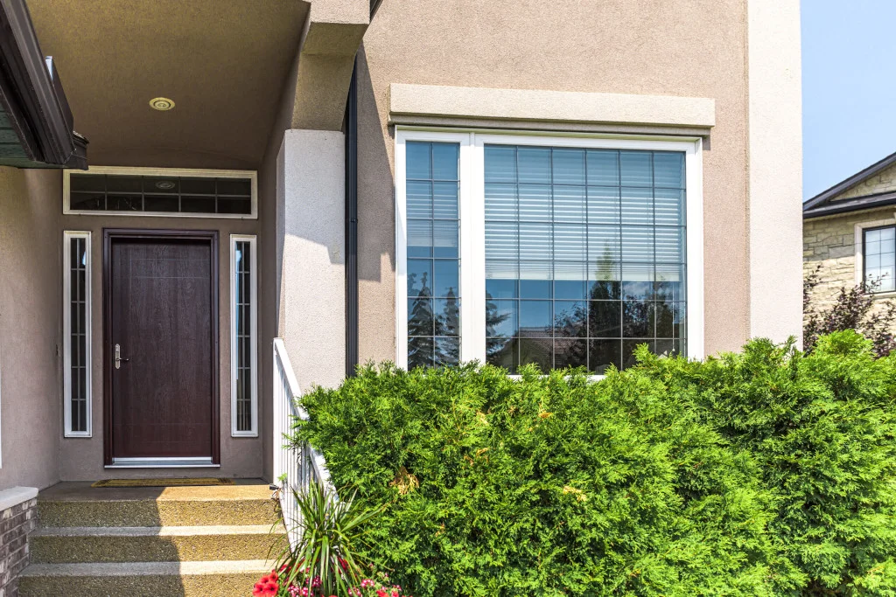
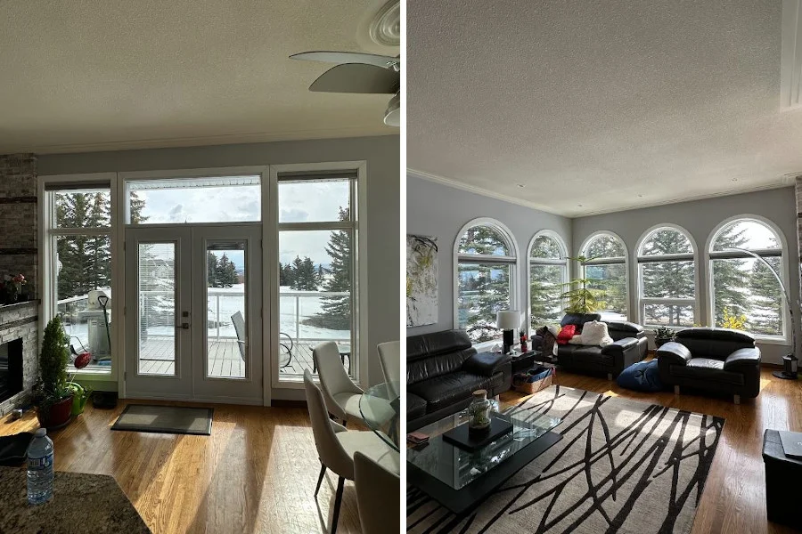
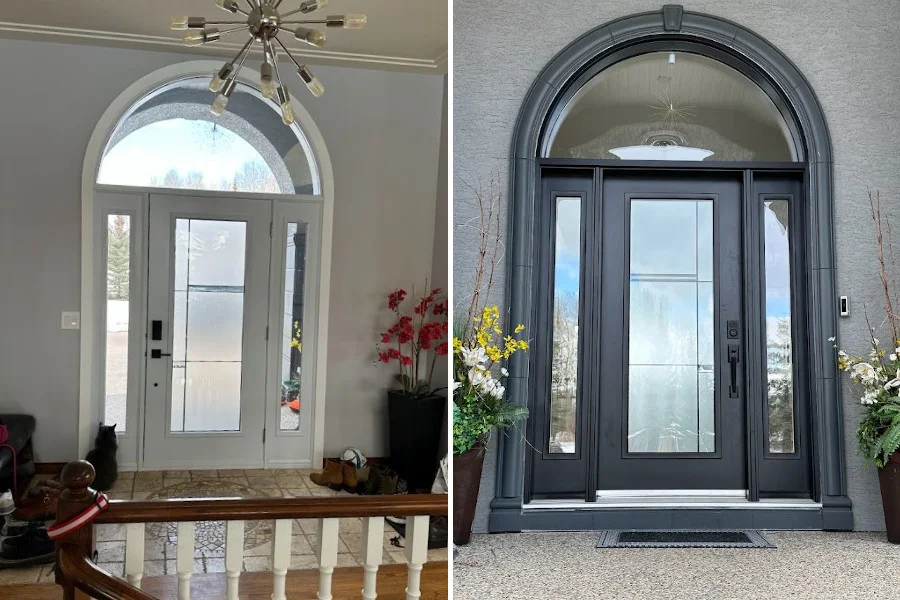
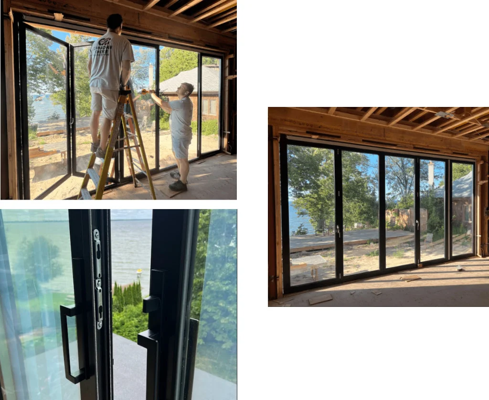

Google aggregate snapshot.
Google aggregate: 4.6 out of 5 across 1,468 reviews in the directory snapshot — broader than patio doors alone.CalgaryLocal.biz snapshot, 13 Nov 2026. View source (opens in new tab)
Google rating 4.6 out of 5 from 1,468 reviews.
Hours: 8:30 AM – 5:00 PM · Mon–Fri; Sat by appointment; Sun closed · company-stated
Our editorial score: 5/5 — independent opinion, separate from the Google rating









Photos from the company's published project gallery. Make sure you hold usage rights before publishing.
These measure different things — keep them separate when you decide.
Subjective desk-research opinion and featured placement. Not a platform rating and not proof of market leadership.
Third-party directory — covers windows & doors broadly.
We display the Google rating as a third-party snapshot with its own count. We do not average them into our editorial score, and we do not present our editorial pick as an independently conducted study.
Canadian Choice lists four patio-door families, with insulated glazing and custom colours, plus security and hardware choices. company-stated Assess real thermal performance by the specific door model you are quoted, not by a blanket company-wide claim.
Double and triple glazing options listed. company-stated
Configurable colours and finishes. company-stated
Reinforced security and hardware choices. company-stated
Marketed as Canadian-made. company-stated
We show the Google snapshot as published and do not edit its sentiment. Check the live Google Business Profile for current customer reviews.
Google aggregate snapshot.
Google aggregate: 4.6 out of 5 across 1,468 reviews in the directory snapshot — broader than patio doors alone.CalgaryLocal.biz snapshot, 13 Nov 2026. View source (opens in new tab)
Balanced view & complaints: Independent complaint channels such as the Better Business Bureau and Trustpilot are worth checking for the current picture. None of these are findings we verified — they are customer claims.
The official patio-door page claims a 25-year transferable warranty on patio-door installation. company-stated Before you treat that as a strength, ask for the written details.
25 years, transferable (claimed). company-stated
Request the full exclusions list in writing.
Confirm whether labour is covered, and for how long.
Ask specifically about glass seals and hardware coverage.
We do not assign a numerical warranty score without the documented terms. Always get warranty promises on paper as part of your quote.
The company promises factory-trained installation, checks for damaged frames, cleanup and after-sales support. company-stated Blanket claims like “always on time” or “all customers satisfied” cannot be validated from public information.
Our editorial opinion: the breadth of styles and the stated warranty are the main reasons for the pick. We did not measure response times and did not conduct secret-shopper visits.
The Calgary page shows whole-project examples rather than a patio-door-only price. company-stated
None of these isolates the patio-door price. Ask for a patio-door-only written quote so you can compare like with like.
The contact page also lists 403-488-2744.
| Mon | 8:30 AM – 5:00 PM | |
|---|---|---|
| Tue | 8:30 AM – 5:00 PM | |
| Wed | 8:30 AM – 5:00 PM | |
| Thu | 8:30 AM – 5:00 PM | |
| Fri | 8:30 AM – 5:00 PM | |
| Sat | By appointment | |
| Sun | Closed |
Hours are company-stated and shown in Calgary time.
Canadian Choice Windows & Doors supplies and installs patio doors for Calgary homeowners, with sliding, stacking, bifold and tilt-and-turn systems, insulated glazing, custom finishes and reinforced security options. company-stated
This summary is drawn from the company's own website and a third-party directory snapshot. It is an independent editorial description by Independent Expert — not a statement from the company, not a lab test, and not paid placement. Treat product, warranty and pricing claims as company-stated and request a written quote.